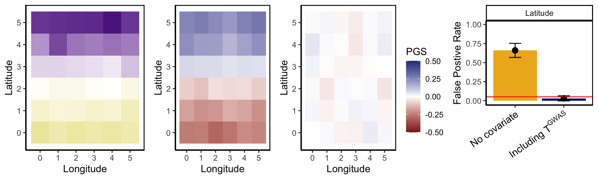

Simulations_Methods
Jennifer Blanc
7/23/2021
Last updated: 2021-12-14
Checks: 6 1
Knit directory: polygenic_adaptation_stratification/analysis/
This reproducible R Markdown analysis was created with workflowr (version 1.6.2). The Checks tab describes the reproducibility checks that were applied when the results were created. The Past versions tab lists the development history.
Great! Since the R Markdown file has been committed to the Git repository, you know the exact version of the code that produced these results.
Great job! The global environment was empty. Objects defined in the global environment can affect the analysis in your R Markdown file in unknown ways. For reproduciblity it’s best to always run the code in an empty environment.
The command set.seed(20201015) was run prior to running the code in the R Markdown file. Setting a seed ensures that any results that rely on randomness, e.g. subsampling or permutations, are reproducible.
Great job! Recording the operating system, R version, and package versions is critical for reproducibility.
Nice! There were no cached chunks for this analysis, so you can be confident that you successfully produced the results during this run.
Using absolute paths to the files within your workflowr project makes it difficult for you and others to run your code on a different machine. Change the absolute path(s) below to the suggested relative path(s) to make your code more reproducible.
| absolute | relative |
|---|---|
| ~/polygenic_adaptation_stratification/code/plot/SimpleGrid_C1_scale_T100_pgs.txt | ../code/plot/SimpleGrid_C1_scale_T100_pgs.txt |
Great! You are using Git for version control. Tracking code development and connecting the code version to the results is critical for reproducibility.
The results in this page were generated with repository version 01e4e1c. See the Past versions tab to see a history of the changes made to the R Markdown and HTML files.
Note that you need to be careful to ensure that all relevant files for the analysis have been committed to Git prior to generating the results (you can use wflow_publish or wflow_git_commit). workflowr only checks the R Markdown file, but you know if there are other scripts or data files that it depends on. Below is the status of the Git repository when the results were generated:
Ignored files:
Ignored: .DS_Store
Ignored: .Rhistory
Ignored: .Rproj.user/
Ignored: .snakemake/
Ignored: code/.DS_Store
Ignored: code/Calculate_Tm/.DS_Store
Ignored: code/Debug/.DS_Store
Ignored: code/PGA_test/.DS_Store
Ignored: code/Simulate_Phenotypes/.DS_Store
Ignored: code/Snakefiles/.DS_Store
Ignored: code/Snakefiles/4PopSplit/Signal/
Ignored: code/Snakefiles/SimpleGrid/.DS_Store
Ignored: data/.DS_Store
Ignored: data/projection_example/
Ignored: output/Calculate_Tm/4PopSplit/E2/
Ignored: output/Calculate_Tm/4PopSplit/E20/
Ignored: output/Calculate_Tm/4PopSplit/E3/
Ignored: output/Calculate_Tm/4PopSplit/E4/
Ignored: output/Calculate_Tm/4PopSplit/E5/
Ignored: output/Calculate_Tm/4PopSplit/E6/
Ignored: output/Calculate_Tm/4PopSplit/E7/
Ignored: output/Calculate_Tm/4PopSplit/E8/
Ignored: output/Calculate_Tm/4PopSplit/E9/
Ignored: output/Calculate_Tm/SimpleGrid/E1/
Ignored: output/Calculate_Tm/SimpleGrid/E2/
Ignored: output/Calculate_Tm/SimpleGrid/E3/
Ignored: output/Calculate_Tm/SimpleGrid/E4/
Ignored: output/Calculate_Tm/SimpleGrid/E5/
Ignored: output/PGA_test/4PopSplit/E2/
Ignored: output/PGA_test/4PopSplit/E20/
Ignored: output/PGA_test/4PopSplit/E3/
Ignored: output/PGA_test/4PopSplit/E4/
Ignored: output/PGA_test/4PopSplit/E5/
Ignored: output/PGA_test/4PopSplit/E6/
Ignored: output/PGA_test/4PopSplit/E7/
Ignored: output/PGA_test/4PopSplit/E8/
Ignored: output/PGA_test/4PopSplit/E9/
Ignored: output/PGA_test/SimpleGrid/
Ignored: output/PRS/4PopSplit/E2/
Ignored: output/PRS/4PopSplit/E20/
Ignored: output/PRS/4PopSplit/E3/
Ignored: output/PRS/4PopSplit/E4/
Ignored: output/PRS/4PopSplit/E5/
Ignored: output/PRS/4PopSplit/E6/
Ignored: output/PRS/4PopSplit/E7/
Ignored: output/PRS/4PopSplit/E8/
Ignored: output/PRS/4PopSplit/E9/
Ignored: output/PRS/SimpleGrid/
Ignored: output/Run_GWAS/
Ignored: output/Simulate_Genotypes/4PopSplit/
Ignored: output/Simulate_Genotypes/SimpleGrid/E1/
Ignored: output/Simulate_Genotypes/SimpleGrid/E2/
Ignored: output/Simulate_Genotypes/SimpleGrid/E3/
Ignored: output/Simulate_Genotypes/SimpleGrid/E4/
Ignored: output/Simulate_Genotypes/SimpleGrid/E5/
Ignored: output/Simulate_Genotypes/SimpleGrid/E6/
Ignored: output/Simulate_Genotypes/SimpleGrid/E7/
Ignored: output/Simulate_Genotypes/SimpleGrid/E8/
Ignored: output/Simulate_Phenotypes/4PopSplit/E2/
Ignored: output/Simulate_Phenotypes/4PopSplit/E20/
Ignored: output/Simulate_Phenotypes/4PopSplit/E3/
Ignored: output/Simulate_Phenotypes/4PopSplit/E4/
Ignored: output/Simulate_Phenotypes/4PopSplit/E5/
Ignored: output/Simulate_Phenotypes/4PopSplit/E6/
Ignored: output/Simulate_Phenotypes/4PopSplit/E7/
Ignored: output/Simulate_Phenotypes/4PopSplit/E8/
Ignored: output/Simulate_Phenotypes/4PopSplit/E9/
Ignored: output/Simulate_Phenotypes/SimpleGrid/
Unstaged changes:
Modified: code/plot/4PopSplit_F100_H28.txt
Deleted: code/plot/4PopSplit_F100_h28.txt
Note that any generated files, e.g. HTML, png, CSS, etc., are not included in this status report because it is ok for generated content to have uncommitted changes.
These are the previous versions of the repository in which changes were made to the R Markdown (analysis/Simulations_methods.Rmd) and HTML (docs/Simulations_methods.html) files. If you’ve configured a remote Git repository (see ?wflow_git_remote), click on the hyperlinks in the table below to view the files as they were in that past version.
| File | Version | Author | Date | Message |
|---|---|---|---|---|
| Rmd | 01e4e1c | jgblanc | 2021-12-14 | wflow_publish(“analysis/Simulations_methods.Rmd”) |
| html | c182fbd | jgblanc | 2021-12-13 | Build site. |
| Rmd | 2727109 | jgblanc | 2021-12-13 | wflow_publish(“analysis/Simulations_methods.Rmd”) |
| Rmd | 452c0c5 | jgblanc | 2021-12-09 | hold betas constant |
| Rmd | ae3248b | jgblanc | 2021-11-12 | add popID code |
| Rmd | 146d521 | jgblanc | 2021-11-01 | move calc ts up |
| Rmd | 2aaea16 | jgblanc | 2021-10-31 | 1 pop example |
| Rmd | 62e925d | jgblanc | 2021-10-29 | try ps example |
| Rmd | bf7fb61 | jgblanc | 2021-10-25 | fix true signal |
| Rmd | a33df9d | jgblanc | 2021-10-19 | pls merge |
| Rmd | 5856cc5 | jgblanc | 2021-10-07 | need to get freq diffs |
| html | 3c774bf | jgblanc | 2021-10-05 | Build site. |
| Rmd | cba0a79 | jgblanc | 2021-10-05 | Publish website |
| Rmd | d395ec7 | jgblanc | 2021-10-04 | transfer true signal up |
| Rmd | 4a47805 | jgblanc | 2021-09-29 | organizing website |
| html | 4a47805 | jgblanc | 2021-09-29 | organizing website |
| html | af81489 | jgblanc | 2021-08-31 | Build site. |
| Rmd | d29b398 | jgblanc | 2021-08-31 | added more data points |
| html | f973a40 | jgblanc | 2021-08-30 | Build site. |
| Rmd | 5c025ae | jgblanc | 2021-08-30 | push stratD workflowr |
| Rmd | 60a04f7 | jgblanc | 2021-08-27 | implement stratD |
| Rmd | b64bb1d | jgblanc | 2021-08-19 | rescale variance |
| html | bbf15a3 | jgblanc | 2021-08-02 | Build site. |
| Rmd | 2324414 | jgblanc | 2021-08-02 | wflow_publish(“analysis/Simulations_methods.Rmd”) |
| html | 35227cc | jgblanc | 2021-08-02 | Build site. |
| Rmd | 3f17ad7 | jgblanc | 2021-08-02 | wflow_publish(c(“analysis/index.Rmd”, “analysis/Simulations_methods.Rmd”)) |
| Rmd | c0a669b | jgblanc | 2021-08-02 | merging |
| Rmd | eca5c29 | jgblanc | 2021-07-23 | plotting stuff |
| html | eca5c29 | jgblanc | 2021-07-23 | plotting stuff |
Introduction
Here I will reccord the details for the simulations presented in the main text and the supplement. I will also include the code to make the the figures. The illustrative examples for the 3 simulation types can be found here (link later).
4PopSplit
Msprime simulation
Generate diplois individuals according to the demographic model below
- T2 = 11000
- T1 (deeper split) = 22000
- Ne (ancestral = A = B = C = D) = 10000
- sample size = 1000 diploids per population
- chromosome length = 100000
- 200 chromosomes
- \(\mu\) = 1e-08
- \(\rho\) = 1e-08
The simulation was run 100 times total.
Create genotypes panels and filter SNPs
- Set up 2 parallel sets of 2
- C1: GWAS panel has the 1000 individuals from populations A and C (2000 total), test panel has the 1000 inidividuals from B and D (2000 total)
- C2: GWAS panel has the 1000 individuals from populations A and B (2000 total), test panel has the 1000 inidividuals from C and D (2000 total)
- Filter snps to sites segregating at greater than 5% frequency within each panel
Draw phenotype
Notes:
- All simulations have \(h^2 = 0\)
- Sample random phenotype \(N(0,1)\) for all GWAS indviduals
- Scale variance to match realistic GWAS (see __ for more details)
- For all individuals in population A shift the mean phenotype by a variable amount
Project Test Vector
- Set test vector as a standardized, mean-centered \(n \times 1\) vector with each entry as the test panel individuals population ID (1 vs 0) encoding
- Project test vector in GWAS panel, resulting in an \(m \times 1\) (see ___ for more detail)
Run GWASs
- Use plink to run GWAS with and without including projected test vector
Calculate PGS and Qx
- Pick the SNP with lowest p-value per chromosome to include in PGS (200 SNPs total)
- Compute PGS in test panel individuals
- Calculate \(V_a\)
- Calculate the amount of variance explained by the test vector (\(\lambda_T\); note that we used a test vector with \(1/2*n_{pop}\),$ -1/2 *n_{pop}$ encoding)
- Calculate empirical null p-value by permuting the signs of the SNP effect sizes 1,000 times and computing the proportion of permutations greater than the true \(Q_x\) value.
Simple Grid
Msprime simulation
Generate diploid individuals using a stepping stone model on a 6x6 grid with the parameters below:
Parameters:
- 200 chromosomes
- sample size = 80 diploids
- Ne = 1000
- \(\mu\) = 1e-07
- \(\rho\) = 1e-07
- m = 0.01
- chromosome length = 100000
- tmove = -9 (perpetual structure)
The simulation was run 100 times total.
Create genotypes panels and filter SNPs
- Sample 20 individuals per deme for test panels (36 * 20 individuals total)
- Remaining individuals (60 per deme) become the GWAS panel
- Restrict snps to sites segregating at greater than 5% frequency within each panel
Draw phenotype
Notes:
- All simulations have \(h^2 = 0\)
- ENV is the magnitude of the phenotype shift
- Sample random phenotype \(N(0,1)\) for all GWAS indviduals
- Scale variance within deme to match full size GWAS variance (see __ for more details)
- Simulate stratification:
- Lat/Lat: Shift average phenotype per Latitude (if env is the total shift, shift 1 lat by env/5, 2 lat by 2*(env/5), etc.) and use Latitude as the test vector
- stratD/Lat: Shift the average phenotype on the diagonals of the grid going lower left to upper right and use latitude as the test vector
Project Test Vector
- Set test vector as a mean centered \(n \times 1\) vector with each entry as the test panel individuals latitude/longitude/popID
- Project test vector in GWAS panel, resulting in an \(m \times 1\) (see ___ for more detail)
Run GWASs
- Use plink to run GWAS with and without including projected test vector
Calculate PGS and Qx
- Pick the SNP with lowest p-value per chromosome to include in PGS (200 SNPs total)
- Compute PGS in test panel individuals
- Calculate \(V_a\)
- Calculate the amount of variance explained by the test vector (\(\lambda_T\); note that we used the mean-centered test vector to compute this)
- Calculate empirical null p-value by permuting the signs of the SNP effect sizes 1,000 times and computing the proportion of permutations greater than the true \(Q_x\) value.
Figures
Lat/Lat
- Simulated phenotype according to latitudinal gradient
- Test vector is latitude

stratD/Lat
- Simulated phenotype according to gradient along the diagonal going from lower left to upper right
- Project latitude as the test vector
- For each simulation do 2 polygenic adaptation tests one with latitude as the test vector and one with longitude

singleDeme/Lat
- Simulated phenotype difference in a single deme
- Project latitude as the test vector
- For each simulation do 1 polygenic adaptation test with latitude as the test vector
singleDeme/singleDeme
- Simulated phenotype difference in a single deme
- Project single deme vs everyone else as test vector
- For each simulation do 1 polygenic adaptation test with single deme vs everybody as the test vector

True Signal
Msprime simulation
Generate diplois individuals according to the demographic model below
- T2 = 2200
- T1 (deeper split) = 4400
- Ne (ancestral = A = B = C = D) = 10000
- sample size A, C = 10000 diploids per population
- sample size B, D = 1000 diploids per population
- chromosome length = 100000
- 200 chromosomes
- \(\mu\) = 1e-08
- \(\rho\) = 1e-08
The simulation was run 100 times total.
Create genotypes panels and filter SNPs
GWAS panel has the 1000 individuals from populations A and C (20000 total), test panel has the 1000 inidividuals from B and D (2000 total)
Draw phenotype
Notes:
- All simulations have \(h^2 = 0.3\)
** TBD **
Project Test Vector
- Set test vector as a standardized, mean-centered \(n \times 1\) vector with each entry as the test panel individuals population ID (1 vs 0) encoding
- Project test vector in GWAS panel, resulting in an \(m \times 1\) (see ___ for more detail)
Run GWASs
- Use plink to run GWAS with and without including projected test vector
- Re-run the GWAS using population ID (A vs C) as a covariate, as all the confounding is between populations this is how we would control for stratification given we know the distribution of the confounder.
Calculate PGS and Qx
For each replicate calculate 7 total \(Q_X\) statistics
- True \(Q_X\) computed using the true causal effects.
- \(Q_X\) computed using the estimated effect sizes at causal sites.
- No covariate included
- Include \(T^{GWAS}\)
- Include population ID
- \(Q_X\) computed using the estimated effect sizes at ascertained sites (picking lowest p-value per chromosome)
- No covariate included
- Include \(T^{GWAS}\)
- Include population ID
Figures

sessionInfo()R version 3.6.2 (2019-12-12)
Platform: x86_64-apple-darwin15.6.0 (64-bit)
Running under: macOS High Sierra 10.13.6
Matrix products: default
BLAS: /Library/Frameworks/R.framework/Versions/3.6/Resources/lib/libRblas.0.dylib
LAPACK: /Library/Frameworks/R.framework/Versions/3.6/Resources/lib/libRlapack.dylib
locale:
[1] en_US.UTF-8/en_US.UTF-8/en_US.UTF-8/C/en_US.UTF-8/en_US.UTF-8
attached base packages:
[1] stats graphics grDevices utils datasets methods base
other attached packages:
[1] ggpubr_0.4.0 latex2exp_0.5.0 forcats_0.5.1 stringr_1.4.0
[5] dplyr_1.0.7 purrr_0.3.4 readr_2.0.1 tidyr_1.1.3
[9] tibble_3.1.4 ggplot2_3.3.5 tidyverse_1.3.1 data.table_1.14.0
[13] workflowr_1.6.2
loaded via a namespace (and not attached):
[1] fs_1.5.0 lubridate_1.7.10 httr_1.4.2 rprojroot_2.0.2
[5] tools_3.6.2 backports_1.2.1 bslib_0.3.0 utf8_1.2.2
[9] R6_2.5.1 DBI_1.1.1 colorspace_2.0-2 withr_2.4.2
[13] tidyselect_1.1.1 gridExtra_2.3 curl_4.3.2 compiler_3.6.2
[17] git2r_0.28.0 cli_3.0.1 rvest_1.0.1 xml2_1.3.2
[21] labeling_0.4.2 sass_0.4.0 scales_1.1.1 digest_0.6.27
[25] foreign_0.8-72 rmarkdown_2.10 rio_0.5.27 pkgconfig_2.0.3
[29] htmltools_0.5.2 dbplyr_2.1.1 fastmap_1.1.0 highr_0.9
[33] rlang_0.4.11 readxl_1.3.1 rstudioapi_0.13 jquerylib_0.1.4
[37] generics_0.1.0 farver_2.1.0 jsonlite_1.7.2 zip_2.2.0
[41] car_3.0-11 magrittr_2.0.1 Rcpp_1.0.7 munsell_0.5.0
[45] fansi_0.5.0 abind_1.4-5 lifecycle_1.0.0 stringi_1.7.4
[49] whisker_0.4 yaml_2.2.1 carData_3.0-4 grid_3.6.2
[53] promises_1.2.0.1 crayon_1.4.1 haven_2.4.3 cowplot_1.1.1
[57] hms_1.1.0 knitr_1.33 pillar_1.6.2 ggsignif_0.6.2
[61] reprex_2.0.1 glue_1.4.2 evaluate_0.14 modelr_0.1.8
[65] vctrs_0.3.8 tzdb_0.1.2 httpuv_1.6.2 cellranger_1.1.0
[69] gtable_0.3.0 assertthat_0.2.1 xfun_0.25 openxlsx_4.2.4
[73] broom_0.7.9 rstatix_0.7.0 later_1.3.0 ellipsis_0.3.2